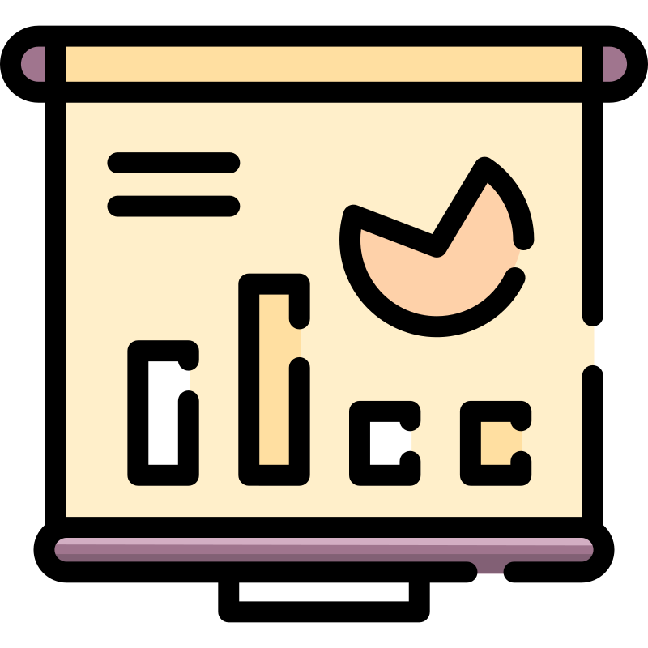
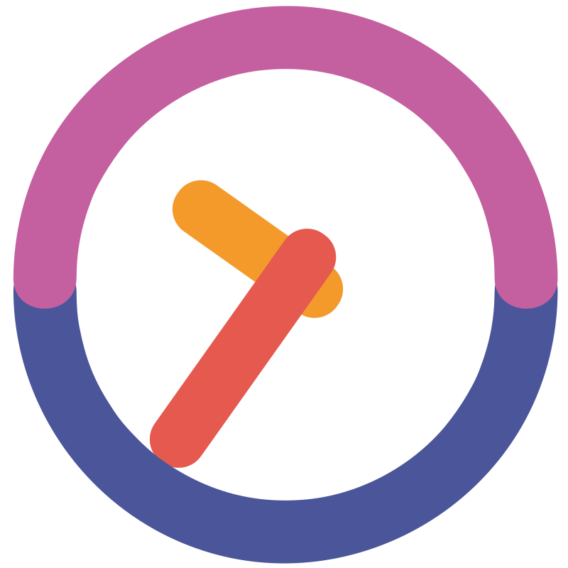

Yetlalia SMIF
Un sistema innovador para la gestión eficiente del mantenimiento de infraestructura. Diseñado para optimizar procesos, reducir costos y garantizar un entorno seguro y funcional en instituciones educativas.

¿Qué es Yetlalia SMIF?
Es un sistema de información innovador diseñado para gestionar el mantenimiento de la infraestructura física educativa. Con un enfoque en la optimización de procesos, este sistema permite a las instituciones educativas realizar mantenimientos preventivos y correctivos de manera eficiente, reduciendo costos y garantizando un entorno seguro y funcional.
Beneficios
-
Registro y seguimiento eficiente de solicitudes de mantenimiento.

- Notificaciones automáticas en tiempo real para tareas pendientes.
- Generación de reportes detallados para evaluar el desempeño. 
- Reducción de tiempos de respuesta en la atención de mantenimiento. 
-
Optimización de recursos y costos operativos.

Características Principales
-
Gestión de Usuarios y Permisos
Nuestro sistema ofrece una gestión de usuarios avanzada, permitiendo la creación de roles y permisos personalizados. Esto facilita la administración eficiente de los equipos de trabajo y garantiza que cada usuario tenga acceso solo a las funciones que necesita.
-
Seguridad Avanzada y Protección de Datos
La seguridad es una prioridad. Implementamos medidas robustas como autenticación de dos factores y cifrado de datos para proteger la información sensible de tu institución. Cumplimos con los estándares de privacidad más exigentes.
-
Interfaz Intuitiva y Fácil de Usar
Diseñamos una interfaz amigable y accesible para todos los usuarios, desde personal administrativo hasta técnicos de mantenimiento. No se requiere capacitación extensa, lo que reduce el tiempo de implementación.
-
Compatibilidad Multiplataforma
Accede al sistema desde cualquier dispositivo, ya sea en computadoras de escritorio, tablets o smartphones. Nuestra plataforma es compatible con los principales sistemas operativos, lo que garantiza flexibilidad y movilidad.
-
Escalabilidad y Adaptabilidad
El sistema está diseñado para crecer contigo. Ya sea que gestiones una pequeña escuela o una gran universidad, nuestra solución se adapta a tus necesidades. Ofrecemos escalabilidad sin complicaciones.
-
Soporte Técnico Integral
Contamos con un equipo de soporte técnico disponible para resolver cualquier duda o problema. Ofrecemos mantenimiento preventivo y correctivo para garantizar que el sistema funcione de manera óptima en todo momento.
Testimonios
"El sistema Yetlalia SMIF ha transformado la forma en que gestionamos el mantenimiento en nuestra institución. ¡Altamente recomendado!"
- Universidad Autónoma de Chiapas
"La eficiencia y la facilidad de uso del sistema son impresionantes. Ha mejorado significativamente nuestros procesos."
- Escuela Primaria XYZ